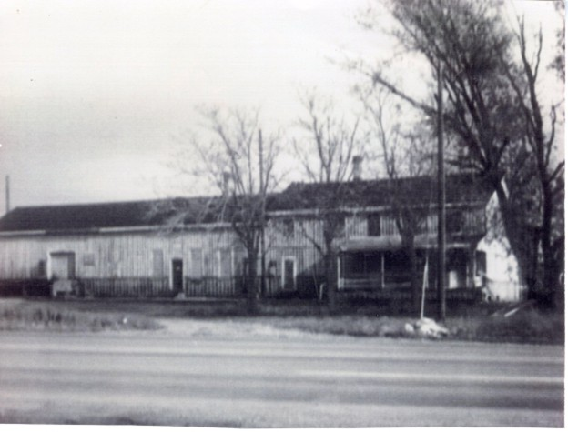

Education in Lehi
By 1875, development in the Junction area had progressed enough to require its own school, demonstrating a growing and stable population west of town. Altogether, Lehi Junction was a semi-independent district shaped by railroad activity.[36]

The Franklin School
Constructed in 1875 at the intersection of 500 West and State Street, the Franklin School — initially known as the Northwest School — served as a crucial anchor for the families settling in the "New Survey" area near Lehi Junction. While the railroad provided the economic impetus for the district, the school transformed the site from a transient industrial hub into a rooted neighborhood. Originally a modest one-room adobe structure, it was officially renamed in 1898 to honor Benjamin Franklin, reflecting a period of educational formalization across Utah.[37]
The school's presence was a direct response to a 1874 petition from local residents who sought to distinguish their community from the central town site.[38] Its history also highlights the complex social fabric of early Lehi; for a time, the area hosted the "New West School" — an institution that fostered early competition between secular and denominational education until tensions dissipated following the 1890 Manifesto.[39]
As the Junction's population swelled with workers from the nearby Lehi Sugar Factory, the Franklin School evolved to meet increasing academic and social demands, even installing the town's first competitive tennis courts in 1901.[40]
Although the original building eventually closed its doors in 1920 as students were consolidated into the Primary and Central Schools, its legacy remains a testament to the Junction's era of rapid growth and its shift from a rail-dependent outpost to a permanent domestic enclave.[41]
American Education in the Late 19th Century
In the late nineteenth century, the Franklin School stood as a symbol of a nation-wide transformation. Across the United States, the Common School Movement was gaining momentum — pushing the idea that a standardized, tax-supported education was essential for a functioning democracy.[42] However, in Utah, this era was defined by a unique "dual system" of schooling. While the rest of the country moved toward secular public education, Utah's classrooms were often caught between local LDS ward-sponsored schools and "mission schools" established by outside denominations.[43]
For a student at the Franklin School in 1875, the "schoolhouse" was far more than a place for rote memorization. Most students learned in multi-age, one-room settings, where older children assisted the younger ones with the "Three Rs": Reading, 'Riting, and 'Rithmetic. Yet, the curriculum was expanding; the arrival of the railroad at Lehi Junction brought a demand for practical skills like bookkeeping, telegraphy, and advanced literacy.[44]
By the 1890s, Utah's transition toward statehood forced a reconciliation of these disparate school systems, leading to the Free School Act of 1890.[45] This law formalized the public districts we recognize today. When you look at the Franklin School, you aren't just looking at an old adobe building — you are seeing the moment when Utah joined the national march toward a modern, unified educational identity.[46]

Union Pacific and the Utah Southern Railroad
The transition of the Utah Southern Railroad from a local, faith-driven enterprise to a link in a national corporate chain marks a pivotal shift in the Great Basin's economic landscape. Originally incorporated in 1871, the Utah Southern was an extension of the Utah Central, designed by LDS Church leadership to connect Salt Lake City to the mining districts of the south. Under the direction of Brigham Young, the line was built largely through cooperative local labor, reflecting the "Theodemocratic" vision of a self-sustaining regional economy independent of outside capital.[47]
However, the immense capital required for iron rails and rolling stock eventually outpaced local tithes and resources. To ensure the line's survival, Brigham Young entered into a complex partnership with Jay Gould and the Union Pacific (UP). By 1875, while the Church maintained a degree of management, the Union Pacific had acquired a controlling interest in the road's bonds. The formal absorption occurred in 1879, when the Utah Southern was consolidated into the Utah Southern Railroad Company, which functioned as a subsidiary of the Union Pacific.[48]
By the time the line reached Milford in 1880, the Union Pacific held absolute sway, integrating Utah's southern corridors into the national market. For the average traveler, this meant more reliable service, but for the community, it represented the integration of Utah's unique economic experiments into the broader American corporate structure.[49]